讨论平面曲线，以及几何、力学和物理学中许多其他问题时，向量记号都是一种方便而几乎不可少的工具。本章建立并运用二维向量的概念，向更高维空间的推广留待第二卷。
直观说明
许多数学对象和物理量只需一个数就能完全刻画。这个数在给定的尺度上度量对象，称为“标量”。角、长、面积、时间、质量和温度都是例子。但三角形的形状、点在空间中的位置、质点运动的加速度或方向、物体内的应力状态等，都需要几个数才能确定。数学中逐渐形成了一些超出实数连续统的概念，使我们得以用一个符号代表这样的对象。平面向量就可由两项信息描述：长度和方向。两点的相对位置、质点的速度和加速度以及作用于质点的力都属于这一类。
原注 1（第 380 页） 复数 a + b i = z a+bi=z a + bi = z a , b a,b a , b
原注 2（第 380 页） 某些场合向量还不够用，例如描述应力或空间的曲率时，需要使用称为“张量”的更一般的对象。
从几何直观上说，向量本质上就是平面（或空间）内的一条有向线段，由长度（或大小）和方向刻画。通常把向量画成具有给定长度、指向给定方向的箭头。除非明确加以限制，向量是“自由”的，即有向线段或箭头的起点位置并非规定向量所必需的条件。
在应用中，速度、加速度和力等物理概念是向量的主要实例。在这里，我们将用“平移”从几何上定义向量。向量分析的出发点不过是给这种有向线段或平移取名为“向量”。它的决定性意义却在于，这些对象像复数一样，能够彼此结合，或与标量（即普通的数）结合；其运算法则在各种应用中都有自然的解释，例如两个速度的合成，或克服一个力而发生位移所做的功。这套运算称为向量代数或向量分析。借助向量这种直观的语言，许多数学和物理关系都能简明清楚地表达出来。
a. 用平移定义向量。记号
平面最简单的一种变换是平移 。平移把任意一点 P = ( x , y ) P=(x,y) P = ( x , y ) P ′ = ( x ′ , y ′ ) P'=(x',y') P ′ = ( x ′ , y ′ ) x ′ = x + a , y ′ = y + b x'=x+a,\ y'=y+b x ′ = x + a , y ′ = y + b a , b a,b a , b a , b a,b a , b 分量 。我们用“向量”作为“平移”的另一个名称，用粗体字母表示，例如分量为 a , b a,b a , b R = ( a , b ) \mathbf R=(a,b) R = ( a , b )
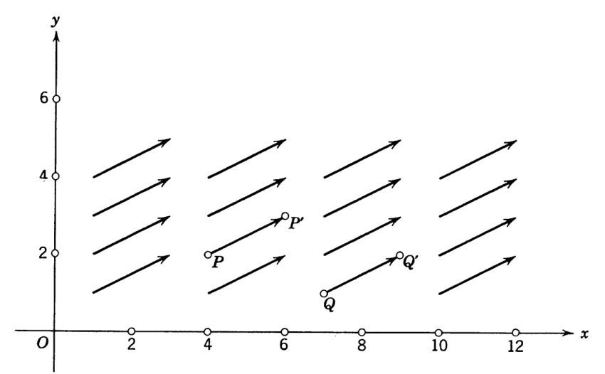
图 4.29 对应于向量 R=(2,1) 的平移 只要知道一对对应点 P = ( x , y ) , P ′ = ( x ′ , y ′ ) P=(x,y),\ P'=(x',y') P = ( x , y ) , P ′ = ( x ′ , y ′ ) R \mathbf R R a = x ′ − x , b = y ′ − y a=x'-x,\ b=y'-y a = x ′ − x , b = y ′ − y P , P ′ P,P' P , P ′ R \mathbf R R P P P P ′ P' P ′ R = P P ′ → \mathbf R=\overrightarrow{PP'} R = P P ′ P , P ′ P,P' P , P ′ R = P P ′ → = ( x ′ − x , y ′ − y ) \mathbf R=\overrightarrow{PP'}=(x'-x,y'-y) R = P P ′ = ( x ′ − x , y ′ − y ) Q = ( ξ , η ) , Q ′ = ( ξ ′ , η ′ ) Q=(\xi,\eta),\ Q'=(\xi',\eta') Q = ( ξ , η ) , Q ′ = ( ξ ′ , η ′ ) ξ ′ − ξ = x ′ − x , η ′ − η = y ′ − y \xi'-\xi=x'-x,\ \eta'-\eta=y'-y ξ ′ − ξ = x ′ − x , η ′ − η = y ′ − y P P P P ′ P' P ′ Q Q Q Q ′ Q' Q ′
向量由两个分量确定，正如平面内的点由两个坐标确定。两者的基本区别在于，向量在几何上由一对点表示。在 R = P P ′ → \mathbf R=\overrightarrow{PP'} R = P P ′ P P P P ′ P' P ′ R \mathbf R R P = ( x , y ) P=(x,y) P = ( x , y ) x ′ = x + a , y ′ = y + b x'=x+a,\ y'=y+b x ′ = x + a , y ′ = y + b P ′ P' P ′ P ′ P → = ( − a , − b ) \overrightarrow{P'P}=(-a,-b) P ′ P = ( − a , − b )
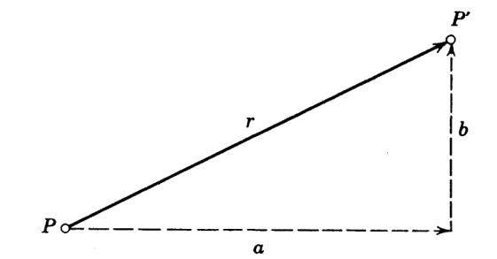
图 4.30 向量的分量 a、b 与长度 r 若取原点 O = ( 0 , 0 ) O=(0,0) O = ( 0 , 0 ) Q = ( x , y ) Q=(x,y) Q = ( x , y ) R = O Q → \mathbf R=\overrightarrow{OQ} R = OQ O O O Q Q Q 位置向量 ，其分量就是 Q Q Q x , y x,y x , y
分量 a = b = 0 a=b=0 a = b = 0 零向量 ，记为 0 \mathbf0 0 0 = ( 0 , 0 ) = P P → \mathbf0=(0,0)=\overrightarrow{PP} 0 = ( 0 , 0 ) = PP P , P ′ P,P' P , P ′ r r r R = ( a , b ) = P P ′ → \mathbf R=(a,b)=\overrightarrow{PP'} R = ( a , b ) = P P ′
r = ( x ′ − x ) 2 + ( y ′ − y ) 2 = a 2 + b 2 .
r=\sqrt{(x'-x)^2+(y'-y)^2}=\sqrt{a^2+b^2}.
r = ( x ′ − x ) 2 + ( y ′ − y ) 2 = a 2 + b 2 . 称 r r r R \mathbf R R 长度 ，记为 r = ∣ R ∣ r=|\mathbf R| r = ∣ R ∣ R = 0 \mathbf R=\mathbf0 R = 0
向量 R = ( a , b ) \mathbf R=(a,b) R = ( a , b ) λ \lambda λ R ∗ = λ R = ( λ a , λ b ) \mathbf R^*=\lambda\mathbf R=(\lambda a,\lambda b) R ∗ = λ R = ( λa , λb ) λ = − 1 \lambda=-1 λ = − 1 R \mathbf R R R ∗ = ( − a , − b ) \mathbf R^*=(-a,-b) R ∗ = ( − a , − b )
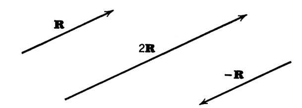
图 4.31 一个向量的数倍 若 R = P P ′ → = ( a , b ) \mathbf R=\overrightarrow{PP'}=(a,b) R = P P ′ = ( a , b ) P = ( x , y ) , P ′ = ( x ′ , y ′ ) P=(x,y),\ P'=(x',y') P = ( x , y ) , P ′ = ( x ′ , y ′ ) R ∗ = λ R \mathbf R^*=\lambda\mathbf R R ∗ = λ R P P ′ ′ → \overrightarrow{PP''} P P ′′ P ′ ′ = ( x ′ ′ , y ′ ′ ) = ( x + λ a , y + λ b ) P''=(x'',y'')=(x+\lambda a,y+\lambda b) P ′′ = ( x ′′ , y ′′ ) = ( x + λa , y + λb ) a = b = 0 a=b=0 a = b = 0 P ′ ′ = P ′ = P P''=P'=P P ′′ = P ′ = P a , b a,b a , b λ \lambda λ P ′ ′ P'' P ′′ x ′ ′ b − y ′ ′ a = x b − y a x''b-y''a=xb-ya x ′′ b − y ′′ a = x b − y a λ = 0 \lambda=0 λ = 0 P ′ ′ = P P''=P P ′′ = P λ = 1 \lambda=1 λ = 1 P ′ ′ = P ′ P''=P' P ′′ = P ′ P ′ ′ P'' P ′′ P , P ′ P,P' P , P ′ λ > 0 \lambda>0 λ > 0 P ′ ′ , P ′ P'',P' P ′′ , P ′ P P P λ < 0 \lambda<0 λ < 0
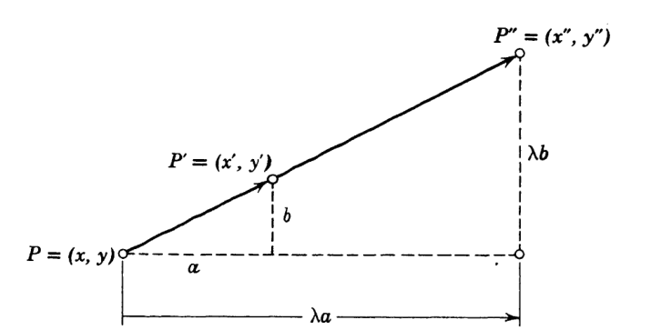
图 4.32 向量的数乘与直线 对两个向量 R = ( a , b ) , R ∗ = ( a ∗ , b ∗ ) \mathbf R=(a,b),\ \mathbf R^*=(a^*,b^*) R = ( a , b ) , R ∗ = ( a ∗ , b ∗ ) R ∗ = λ R \mathbf R^*=\lambda\mathbf R R ∗ = λ R λ > 0 \lambda>0 λ > 0 λ < 0 \lambda<0 λ < 0 R = 0 \mathbf R=\mathbf0 R = 0 R ∗ = 0 \mathbf R^*=\mathbf0 R ∗ = 0 R ≠ 0 \mathbf R\ne\mathbf0 R = 0 R ∗ \mathbf R^* R ∗ R \mathbf R R
a a 2 + b 2 = a ∗ a ∗ 2 + b ∗ 2 , b a 2 + b 2 = b ∗ a ∗ 2 + b ∗ 2 .
\frac a{\sqrt{a^2+b^2}}=\frac{a^*}{\sqrt{a^{*2}+b^{*2}}},\qquad
\frac b{\sqrt{a^2+b^2}}=\frac{b^*}{\sqrt{a^{*2}+b^{*2}}}.
a 2 + b 2 a = a ∗ 2 + b ∗ 2 a ∗ , a 2 + b 2 b = a ∗ 2 + b ∗ 2 b ∗ . 确定 R \mathbf R R
ξ = a a 2 + b 2 = a ∣ R ∣ = a r , η = b a 2 + b 2 = b ∣ R ∣ = b r
\xi=\frac a{\sqrt{a^2+b^2}}=\frac a{|\mathbf R|}=\frac ar,\qquad
\eta=\frac b{\sqrt{a^2+b^2}}=\frac b{|\mathbf R|}=\frac br
ξ = a 2 + b 2 a = ∣ R ∣ a = r a , η = a 2 + b 2 b = ∣ R ∣ b = r b 称为它的方向余弦 。当 R = 0 \mathbf R=\mathbf0 R = 0 ξ 2 + η 2 = 1 \xi^2+\eta^2=1 ξ 2 + η 2 = 1 α \alpha α β = π / 2 − α \beta=\pi/2-\alpha β = π /2 − α ξ = cos α , η = sin α = cos β \xi=\cos\alpha,\ \eta=\sin\alpha=\cos\beta ξ = cos α , η = sin α = cos β α \alpha α R \mathbf R R 2 π 2\pi 2 π R = P P ′ → \mathbf R=\overrightarrow{PP'} R = P P ′ cos α = ( x ′ − x ) / r , sin α = ( y ′ − y ) / r \cos\alpha=(x'-x)/r,\ \sin\alpha=(y'-y)/r cos α = ( x ′ − x ) / r , sin α = ( y ′ − y ) / r α \alpha α x x x P P P P ′ P' P ′ x x x α \alpha α P P P P ′ P' P ′
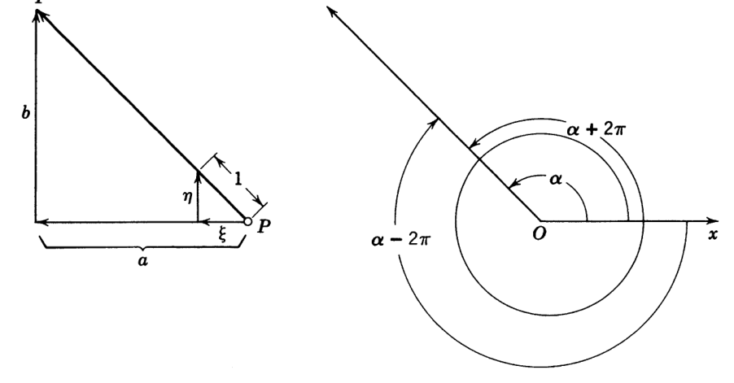
图 4.33 向量的方向余弦与方向角 反向量 − R = ( − a , − b ) -\mathbf R=(-a,-b) − R = ( − a , − b ) − ξ , − η -\xi,-\eta − ξ , − η α \alpha α π \pi π P P ′ → \overrightarrow{PP'} P P ′ P P P α \alpha α P ′ P' P ′ θ \theta θ
b. 向量的加法与乘法
向量的和
我们已将向量定义为平移，即平面上一种特殊的点映射。任意两个映射，都可以通过先后施行而复合：若第一映射把 P P P P ′ P' P ′ P ′ P' P ′ P ′ ′ P'' P ′′ P P P P ′ ′ P'' P ′′ R = ( a , b ) , R ∗ = ( a ∗ , b ∗ ) \mathbf R=(a,b),\ \mathbf R^*=(a^*,b^*) R = ( a , b ) , R ∗ = ( a ∗ , b ∗ ) P = ( x , y ) P=(x,y) P = ( x , y ) P ′ = ( x + a , y + b ) P'=(x+a,y+b) P ′ = ( x + a , y + b ) P ′ P' P ′ P ′ ′ = ( x + a + a ∗ , y + b + b ∗ ) P''=(x+a+a^*,y+b+b^*) P ′′ = ( x + a + a ∗ , y + b + b ∗ ) P P P P ′ ′ P'' P ′′ R = P P ′ → \mathbf R=\overrightarrow{PP'} R = P P ′ R ∗ = P ′ P ′ ′ → \mathbf R^*=\overrightarrow{P'P''} R ∗ = P ′ P ′′ 和 或合向量 ，记作 R + R ∗ \mathbf R+\mathbf R^* R + R ∗ a + a ∗ , b + b ∗ a+a^*,\ b+b^* a + a ∗ , b + b ∗
P P ′ → + P ′ P ′ ′ → = P P ′ ′ → , ( a , b ) + ( a ∗ , b ∗ ) = ( a + a ∗ , b + b ∗ ) .
\overrightarrow{PP'}+\overrightarrow{P'P''}=\overrightarrow{PP''},\qquad
(a,b)+(a^*,b^*)=(a+a^*,b+b^*).
P P ′ + P ′ P ′′ = P P ′′ , ( a , b ) + ( a ∗ , b ∗ ) = ( a + a ∗ , b + b ∗ ) . 若把 R ∗ \mathbf R^* R ∗ R \mathbf R R R ∗ = P P ′ ′ ′ → \mathbf R^*=\overrightarrow{PP'''} R ∗ = P P ′′′ P , P ′ ′ ′ , P ′ ′ , P ′ P,P''',P'',P' P , P ′′′ , P ′′ , P ′ P P P R , R ∗ \mathbf R,\mathbf R^* R , R ∗ P P P R + R ∗ \mathbf R+\mathbf R^* R + R ∗
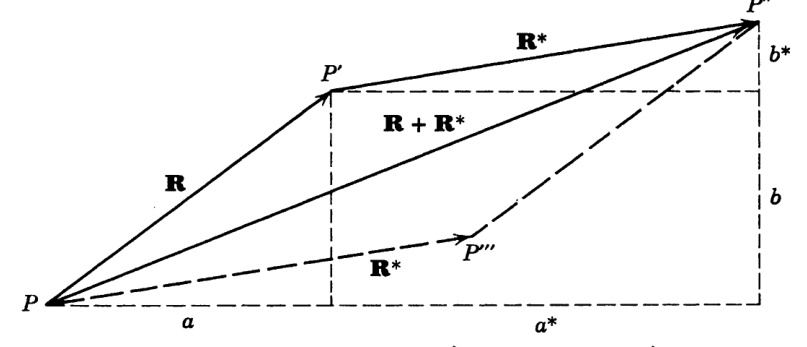
图 4.34 向量的加法 原注 1（第 385 页） 这种“和”其实就是第 52 页定义的两个映射的“符号乘积”。这里用和的记号更自然，因为与它对应的是分量相加。
向量相加即对应分量相加，因而满足算术的交换律和结合律（图 4.35）。以数 λ \lambda λ λ , μ \lambda,\mu λ , μ
λ ( R + R ∗ ) = λ R + λ R ∗ , ( λ + μ ) R = λ R + μ R .
\lambda(\mathbf R+\mathbf R^*)=\lambda\mathbf R+\lambda\mathbf R^*,\qquad
(\lambda+\mu)\mathbf R=\lambda\mathbf R+\mu\mathbf R.
λ ( R + R ∗ ) = λ R + λ R ∗ , ( λ + μ ) R = λ R + μ R . 原注 2（第 385 页） 为在等式中区分向量和数，书写乘积时总把数放在向量前面。也可定义 λ R = R λ \lambda\mathbf R=\mathbf R\lambda λ R = R λ R λ \mathbf R\lambda R λ
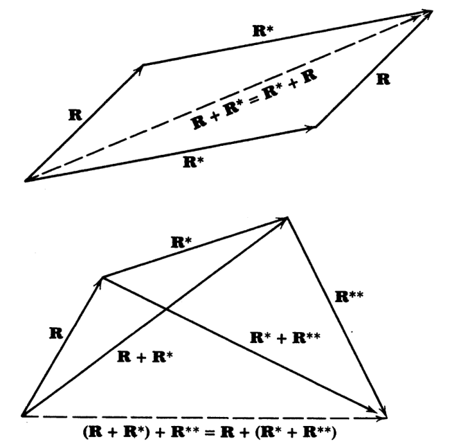
图 4.35 向量加法的交换律与结合律 这些法则可以用 P , P ′ P,P' P , P ′ P P ′ → \overrightarrow{PP'} P P ′
P P ′ → = P O → + O P ′ → = O P ′ → + P O → = O P ′ → − O P → .
\overrightarrow{PP'}=\overrightarrow{PO}+\overrightarrow{OP'}
=\overrightarrow{OP'}+\overrightarrow{PO}=\overrightarrow{OP'}-\overrightarrow{OP}.
P P ′ = PO + O P ′ = O P ′ + PO = O P ′ − OP . 一般地，从点 P P P A , B , C , … , E , F A,B,C,\ldots,E,F A , B , C , … , E , F Q Q Q P Q → \overrightarrow{PQ} PQ P A → , A B → , B C → , … , E F → , F Q → \overrightarrow{PA},\overrightarrow{AB},\overrightarrow{BC},\ldots,\overrightarrow{EF},\overrightarrow{FQ} P A , A B , BC , … , EF , FQ
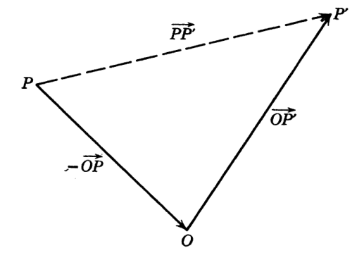
图 4.36 由位置向量的差表示位移 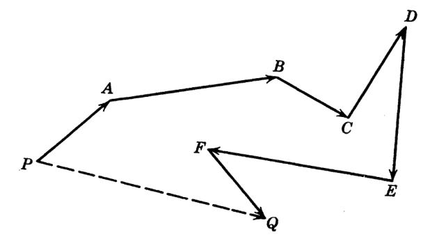
图 4.37 沿折线相加各段的位移 向量之间的角
向量 R ∗ = ( a ∗ , b ∗ ) \mathbf R^*=(a^*,b^*) R ∗ = ( a ∗ , b ∗ ) R = ( a , b ) \mathbf R=(a,b) R = ( a , b ) θ \theta θ θ = α ∗ − α \theta=\alpha^*-\alpha θ = α ∗ − α θ \theta θ 2 π 2\pi 2 π θ \theta θ R \mathbf R R R ∗ \mathbf R^* R ∗ cos θ , sin θ \cos\theta,\sin\theta cos θ , sin θ
cos θ = cos ( α ∗ − α ) = cos α cos α ∗ + sin α sin α ∗ = a a ∗ + b b ∗ a 2 + b 2 a ∗ 2 + b ∗ 2 , sin θ = sin ( α ∗ − α ) = cos α sin α ∗ − sin α cos α ∗ = a b ∗ − a ∗ b a 2 + b 2 a ∗ 2 + b ∗ 2 .
\begin{aligned}
\cos\theta&=\cos(\alpha^*-\alpha)=\cos\alpha\cos\alpha^*+\sin\alpha\sin\alpha^*
=\frac{aa^*+bb^*}{\sqrt{a^2+b^2}\sqrt{a^{*2}+b^{*2}}},\\
\sin\theta&=\sin(\alpha^*-\alpha)=\cos\alpha\sin\alpha^*-\sin\alpha\cos\alpha^*
=\frac{ab^*-a^*b}{\sqrt{a^2+b^2}\sqrt{a^{*2}+b^{*2}}}.
\end{aligned}
cos θ sin θ = cos ( α ∗ − α ) = cos α cos α ∗ + sin α sin α ∗ = a 2 + b 2 a ∗ 2 + b ∗ 2 a a ∗ + b b ∗ , = sin ( α ∗ − α ) = cos α sin α ∗ − sin α cos α ∗ = a 2 + b 2 a ∗ 2 + b ∗ 2 a b ∗ − a ∗ b . 两个分母都是向量长度的乘积 r r ∗ rr^* r r ∗
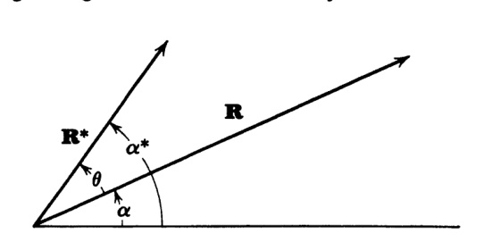
图 4.38 由 R 转向 R* 的角 θ 两向量的内积与外积
向量 R = ( a , b ) , R ∗ = ( a ∗ , b ∗ ) \mathbf R=(a,b),\ \mathbf R^*=(a^*,b^*) R = ( a , b ) , R ∗ = ( a ∗ , b ∗ )
R ⋅ R ∗ = a a ∗ + b b ∗ = r r ∗ cos θ ,
\mathbf R\cdot\mathbf R^*=aa^*+bb^*=rr^*\cos\theta,
R ⋅ R ∗ = a a ∗ + b b ∗ = r r ∗ cos θ , “外积”或“叉积”定义为
R × R ∗ = a b ∗ − a ∗ b = r r ∗ sin θ .
\mathbf R\times\mathbf R^*=ab^*-a^*b=rr^*\sin\theta.
R × R ∗ = a b ∗ − a ∗ b = r r ∗ sin θ . 内、外积满足下列分配律及与数乘的结合律，这可以立即验证：
R ⋅ ( R ∗ + R ∗ ∗ ) = R ⋅ R ∗ + R ⋅ R ∗ ∗ , R × ( R ∗ + R ∗ ∗ ) = R × R ∗ + R × R ∗ ∗ , λ ( R ⋅ R ∗ ) = ( λ R ) ⋅ R ∗ = R ⋅ ( λ R ∗ ) , λ ( R × R ∗ ) = ( λ R ) × R ∗ = R × ( λ R ∗ ) .
\begin{aligned}
\mathbf R\cdot(\mathbf R^*+\mathbf R^{**})&=\mathbf R\cdot\mathbf R^*+\mathbf R\cdot\mathbf R^{**},\\
\mathbf R\times(\mathbf R^*+\mathbf R^{**})&=\mathbf R\times\mathbf R^*+\mathbf R\times\mathbf R^{**},\\
\lambda(\mathbf R\cdot\mathbf R^*)&=(\lambda\mathbf R)\cdot\mathbf R^*=\mathbf R\cdot(\lambda\mathbf R^*),\\
\lambda(\mathbf R\times\mathbf R^*)&=(\lambda\mathbf R)\times\mathbf R^*=\mathbf R\times(\lambda\mathbf R^*).
\end{aligned}
R ⋅ ( R ∗ + R ∗∗ ) R × ( R ∗ + R ∗∗ ) λ ( R ⋅ R ∗ ) λ ( R × R ∗ ) = R ⋅ R ∗ + R ⋅ R ∗∗ , = R × R ∗ + R × R ∗∗ , = ( λ R ) ⋅ R ∗ = R ⋅ ( λ R ∗ ) , = ( λ R ) × R ∗ = R × ( λ R ∗ ) . 内积满足乘法交换律 R ⋅ R ∗ = R ∗ ⋅ R \mathbf R\cdot\mathbf R^*=\mathbf R^*\cdot\mathbf R R ⋅ R ∗ = R ∗ ⋅ R R × R ∗ = − R ∗ × R \mathbf R\times\mathbf R^*=-\mathbf R^*\times\mathbf R R × R ∗ = − R ∗ × R
原注 1（第 388 页） 按这里的定义，内积和外积实际上都是标量。把“标量积”这个名称专留给内积，是因为到三维空间中，与这里的外积相应的量是一个向量。
取同一起点，设 R = P Q → , R ∗ = P Q ∗ → \mathbf R=\overrightarrow{PQ},\ \mathbf R^*=\overrightarrow{PQ^*} R = PQ , R ∗ = P Q ∗ P Q ∗ PQ^* P Q ∗ P Q PQ PQ r ∗ cos θ r^*\cos\theta r ∗ cos θ P Q PQ PQ r r r P Q Q ∗ PQQ^* PQ Q ∗
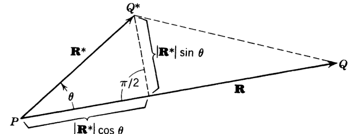
图 4.39 向量外积等于有向三角形面积的两倍 对任一 R = ( a , b ) \mathbf R=(a,b) R = ( a , b ) R ⋅ R = a 2 + b 2 = ∣ R ∣ 2 \mathbf R\cdot\mathbf R=a^2+b^2=|\mathbf R|^2 R ⋅ R = a 2 + b 2 = ∣ R ∣ 2 R = 0 \mathbf R=\mathbf0 R = 0 R ⋅ R \mathbf R\cdot\mathbf R R ⋅ R R × R \mathbf R\times\mathbf R R × R R ⋅ R ∗ = 0 \mathbf R\cdot\mathbf R^*=0 R ⋅ R ∗ = 0 R × R ∗ = 0 \mathbf R\times\mathbf R^*=0 R × R ∗ = 0
直线方程
用向量记号很容易写出通过两点，或通过给定一点、具有给定方向的直线方程。设 P = ( x , y ) , P 0 = ( x 0 , y 0 ) , P 1 = ( x 1 , y 1 ) P=(x,y),\ P_0=(x_0,y_0),\ P_1=(x_1,y_1) P = ( x , y ) , P 0 = ( x 0 , y 0 ) , P 1 = ( x 1 , y 1 ) P 0 ≠ P 1 P_0\ne P_1 P 0 = P 1 P P P P 0 , P 1 P_0,P_1 P 0 , P 1 P 0 P → , P 0 P 1 → \overrightarrow{P_0P},\overrightarrow{P_0P_1} P 0 P , P 0 P 1 P 0 P → × P 0 P 1 → = 0 \overrightarrow{P_0P}\times\overrightarrow{P_0P_1}=0 P 0 P × P 0 P 1 = 0 R = O P → , R 0 = O P 0 → , R 1 = O P 1 → \mathbf R=\overrightarrow{OP},\ \mathbf R_0=\overrightarrow{OP_0},\ \mathbf R_1=\overrightarrow{OP_1} R = OP , R 0 = O P 0 , R 1 = O P 1
( R − R 0 ) × ( R 1 − R 0 ) = 0 , ( R 1 − R 0 ) × R = R 1 × R 0 .
(\mathbf R-\mathbf R_0)\times(\mathbf R_1-\mathbf R_0)=0,\qquad
(\mathbf R_1-\mathbf R_0)\times\mathbf R=\mathbf R_1\times\mathbf R_0.
( R − R 0 ) × ( R 1 − R 0 ) = 0 , ( R 1 − R 0 ) × R = R 1 × R 0 . 代入各点的坐标，得到直线方程的通常形式（图 4.40）
( x 1 − x 0 ) y − ( y 1 − y 0 ) x = x 1 y 0 − y 1 x 0 .
(x_1-x_0)y-(y_1-y_0)x=x_1y_0-y_1x_0.
( x 1 − x 0 ) y − ( y 1 − y 0 ) x = x 1 y 0 − y 1 x 0 . 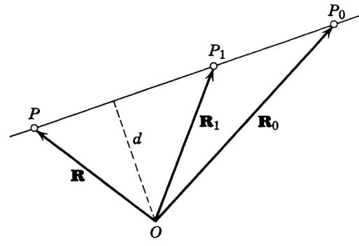
图 4.40 直线的向量表示 也可以指定直线上一点 P 0 P_0 P 0 S = ( a , b ) \mathbf S=(a,b) S = ( a , b ) ( R − R 0 ) × S = 0 (\mathbf R-\mathbf R_0)\times\mathbf S=0 ( R − R 0 ) × S = 0 ( x − x 0 ) b − ( y − y 0 ) a = 0 (x-x_0)b-(y-y_0)a=0 ( x − x 0 ) b − ( y − y 0 ) a = 0 S = P 0 P 1 → \mathbf S=\overrightarrow{P_0P_1} S = P 0 P 1
直线到原点的有向距离 d d d d d d P 0 P 1 → \overrightarrow{P_0P_1} P 0 P 1 O P 0 P 1 OP_0P_1 O P 0 P 1
d = O P 0 → × O P 1 → ∣ P 0 P 1 → ∣ = R 0 × R 1 ∣ R 1 − R 0 ∣ = x 0 y 1 − x 1 y 0 ( x 1 − x 0 ) 2 + ( y 1 − y 0 ) 2 .
d=\frac{\overrightarrow{OP_0}\times\overrightarrow{OP_1}}{|\overrightarrow{P_0P_1}|}
=\frac{\mathbf R_0\times\mathbf R_1}{|\mathbf R_1-\mathbf R_0|}
=\frac{x_0y_1-x_1y_0}{\sqrt{(x_1-x_0)^2+(y_1-y_0)^2}}.
d = ∣ P 0 P 1 ∣ O P 0 × O P 1 = ∣ R 1 − R 0 ∣ R 0 × R 1 = ( x 1 − x 0 ) 2 + ( y 1 − y 0 ) 2 x 0 y 1 − x 1 y 0 . 若 O , P 0 , P 1 O,P_0,P_1 O , P 0 , P 1 d d d
坐标向量
向量 R = ( a , b ) \mathbf R=(a,b) R = ( a , b )
R = a i + b j , (29)
\mathbf R=a\mathbf i+b\mathbf j,\tag{29}
R = a i + b j , ( 29 ) 其中 i , j \mathbf i,\mathbf j i , j
i = ( 1 , 0 ) , j = ( 0 , 1 ) . (30)
\mathbf i=(1,0),\qquad \mathbf j=(0,1).\tag{30}
i = ( 1 , 0 ) , j = ( 0 , 1 ) . ( 30 ) R \mathbf R R a i , b j a\mathbf i,b\mathbf j a i , b j a , b a,b a , b
应用中常须把一个向量 R \mathbf R R 1 1 1 I , J \mathbf I,\mathbf J I , J A , B A,B A , B
R = A I + B J , (31)
\mathbf R=A\mathbf I+B\mathbf J,\tag{31}
R = A I + B J , ( 31 ) 就得到了所要的分解（见第 391 页的图 4.40）。若存在这种表示，便很容易求出 A , B A,B A , B
I ⋅ I = J ⋅ J = 1 , I ⋅ J = 0. (32)
\mathbf I\cdot\mathbf I=\mathbf J\cdot\mathbf J=1,\qquad \mathbf I\cdot\mathbf J=0.\tag{32}
I ⋅ I = J ⋅ J = 1 , I ⋅ J = 0. ( 32 ) 把 (31) 分别与 I , J \mathbf I,\mathbf J I , J
A = R ⋅ I , B = R ⋅ J . (33)
A=\mathbf R\cdot\mathbf I,\qquad B=\mathbf R\cdot\mathbf J.\tag{33}
A = R ⋅ I , B = R ⋅ J . ( 33 ) 换言之，A , B A,B A , B R \mathbf R R
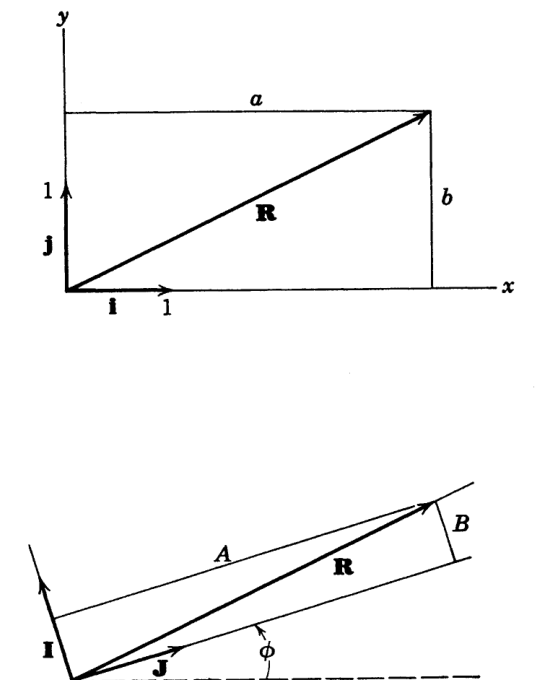
图 4.40 向量在两组坐标轴上的分解（原书此图重号） 只要能把 i , j \mathbf i,\mathbf j i , j I , J \mathbf I,\mathbf J I , J R \mathbf R R I = ( α , β ) , J = ( γ , δ ) \mathbf I=(\alpha,\beta),\ \mathbf J=(\gamma,\delta) I = ( α , β ) , J = ( γ , δ )
I = α i + β j , J = γ i + δ j . (34)
\mathbf I=\alpha\mathbf i+\beta\mathbf j,\qquad
\mathbf J=\gamma\mathbf i+\delta\mathbf j.\tag{34}
I = α i + β j , J = γ i + δ j . ( 34 ) 由 (32) 系数满足所谓正交关系
α 2 + β 2 = γ 2 + δ 2 = 1 , α γ + β δ = 0. (35)
\alpha^2+\beta^2=\gamma^2+\delta^2=1,\qquad \alpha\gamma+\beta\delta=0.\tag{35}
α 2 + β 2 = γ 2 + δ 2 = 1 , α γ + β δ = 0. ( 35 ) 以 δ \delta δ β \beta β
( α δ − β γ ) i = δ I − β J , (36)
(\alpha\delta-\beta\gamma)\mathbf i=\delta\mathbf I-\beta\mathbf J,\tag{36}
( α δ − β γ ) i = δ I − β J , ( 36 ) 同样，
( α δ − β γ ) j = − γ I + α J . (37)
(\alpha\delta-\beta\gamma)\mathbf j=-\gamma\mathbf I+\alpha\mathbf J.\tag{37}
( α δ − β γ ) j = − γ I + α J . ( 37 ) 由于 I , J \mathbf I,\mathbf J I , J
α δ − β γ = I × J = ± 1 , (38)
\alpha\delta-\beta\gamma=\mathbf I\times\mathbf J=\pm1,\tag{38}
α δ − β γ = I × J = ± 1 , ( 38 ) 从 I \mathbf I I J \mathbf J J 90 ∘ 90^\circ 9 0 ∘ I , J \mathbf I,\mathbf J I , J i , j \mathbf i,\mathbf j i , j
(31) 也可解释为 R \mathbf R R I , J \mathbf I,\mathbf J I , J I , J \mathbf I,\mathbf J I , J φ , ψ \varphi,\psi φ , ψ α = cos φ , β = sin φ , γ = cos ψ , δ = sin ψ \alpha=\cos\varphi,\ \beta=\sin\varphi,\ \gamma=\cos\psi,\ \delta=\sin\psi α = cos φ , β = sin φ , γ = cos ψ , δ = sin ψ ψ = φ + π / 2 \psi=\varphi+\pi/2 ψ = φ + π /2 ψ = φ − π / 2 \psi=\varphi-\pi/2 ψ = φ − π /2 γ = − β , δ = α , α δ − β γ = + 1 \gamma=-\beta,\ \delta=\alpha,\ \alpha\delta-\beta\gamma=+1 γ = − β , δ = α , α δ − β γ = + 1
I = ( cos φ , sin φ ) , J = ( − sin φ , cos φ ) . (39)
\mathbf I=(\cos\varphi,\sin\varphi),\qquad \mathbf J=(-\sin\varphi,\cos\varphi).\tag{39}
I = ( cos φ , sin φ ) , J = ( − sin φ , cos φ ) . ( 39 ) 给出 R \mathbf R R I , J \mathbf I,\mathbf J I , J
A = a cos φ + b sin φ , B = − a sin φ + b cos φ . (40)
A=a\cos\varphi+b\sin\varphi,\qquad B=-a\sin\varphi+b\cos\varphi.\tag{40}
A = a cos φ + b sin φ , B = − a sin φ + b cos φ . ( 40 ) 它联系同一向量在两套右手坐标系中的分量，其中一系由另一系旋转 φ \varphi φ O O O R \mathbf R R P P P O P → \overrightarrow{OP} OP a , b a,b a , b A , B A,B A , B P P P
c. 变向量及其导数与积分
自然也可以考察分量为变量 t t t R = ( a , b ) \mathbf R=(a,b) R = ( a , b ) a = a ( t ) , b = b ( t ) a=a(t),\ b=b(t) a = a ( t ) , b = b ( t ) t t t R = R ( t ) = ( a ( t ) , b ( t ) ) \mathbf R=\mathbf R(t)=(a(t),b(t)) R = R ( t ) = ( a ( t ) , b ( t )) R ( t ) \mathbf R(t) R ( t ) t t t 向量函数 。随时间 t t t
若 t → t 0 t\to t_0 t → t 0 a ( t ) → a ∗ , b ( t ) → b ∗ a(t)\to a^*,\ b(t)\to b^* a ( t ) → a ∗ , b ( t ) → b ∗ R ( t ) \mathbf R(t) R ( t ) R ∗ = ( a ∗ , b ∗ ) \mathbf R^*=(a^*,b^*) R ∗ = ( a ∗ , b ∗ ) R ( t ) \mathbf R(t) R ( t ) R ∗ \mathbf R^* R ∗ R ∗ ≠ 0 \mathbf R^*\ne\mathbf0 R ∗ = 0 lim t → t 0 R ( t ) = R ( t 0 ) \lim_{t\to t_0}\mathbf R(t)=\mathbf R(t_0) lim t → t 0 R ( t ) = R ( t 0 ) R \mathbf R R t t t R ( t ) \mathbf R(t) R ( t ) t t t t t t R ( t 0 ) ≠ 0 \mathbf R(t_0)\ne\mathbf0 R ( t 0 ) = 0
为引入向量的导数，对参数值 t , t + h t,t+h t , t + h
1 h [ R ( t + h ) − R ( t ) ] = ( a ( t + h ) − a ( t ) h , b ( t + h ) − b ( t ) h ) .
\frac1h[\mathbf R(t+h)-\mathbf R(t)]
=\left(\frac{a(t+h)-a(t)}h,\frac{b(t+h)-b(t)}h\right).
h 1 [ R ( t + h ) − R ( t )] = ( h a ( t + h ) − a ( t ) , h b ( t + h ) − b ( t ) ) . 把 h → 0 h\to0 h → 0 R \mathbf R R
R ˙ = d R d t = lim h → 0 1 h [ R ( t + h ) − R ( t ) ] = ( d a d t , d b d t ) = ( a ˙ , b ˙ ) .
\dot{\mathbf R}=\frac{d\mathbf R}{dt}
=\lim_{h\to0}\frac1h[\mathbf R(t+h)-\mathbf R(t)]
=\left(\frac{da}{dt},\frac{db}{dt}\right)=(\dot a,\dot b).
R ˙ = d t d R = h → 0 lim h 1 [ R ( t + h ) − R ( t )] = ( d t d a , d t d b ) = ( a ˙ , b ˙ ) . 对向量求导，就是对各分量求导。向量的积求导时也服从通常的法则：
( R ⋅ S ) ⋅ = d ( R ⋅ S ) d t = d R d t ⋅ S + R ⋅ d S d t = R ˙ ⋅ S + R ⋅ S ˙ , ( R × S ) ⋅ = d ( R × S ) d t = R ˙ × S + R × S ˙ .
\begin{aligned}
(\mathbf R\cdot\mathbf S)^{\boldsymbol{\cdot}}&=\frac{d(\mathbf R\cdot\mathbf S)}{dt}
=\frac{d\mathbf R}{dt}\cdot\mathbf S+\mathbf R\cdot\frac{d\mathbf S}{dt}
=\dot{\mathbf R}\cdot\mathbf S+\mathbf R\cdot\dot{\mathbf S},\\
(\mathbf R\times\mathbf S)^{\boldsymbol{\cdot}}&=\frac{d(\mathbf R\times\mathbf S)}{dt}
=\dot{\mathbf R}\times\mathbf S+\mathbf R\times\dot{\mathbf S}.
\end{aligned}
( R ⋅ S ) ⋅ ( R × S ) ⋅ = d t d ( R ⋅ S ) = d t d R ⋅ S + R ⋅ d t d S = R ˙ ⋅ S + R ⋅ S ˙ , = d t d ( R × S ) = R ˙ × S + R × S ˙ . 对外积，因子的次序须保持原样。同样，以各分量的积分定义向量的积分：
∫ α β R ( t ) d t = ( ∫ α β a ( t ) d t , ∫ α β b ( t ) d t ) .
\int_\alpha^\beta\mathbf R(t)\,dt
=\left(\int_\alpha^\beta a(t)\,dt,\int_\alpha^\beta b(t)\,dt\right).
∫ α β R ( t ) d t = ( ∫ α β a ( t ) d t , ∫ α β b ( t ) d t ) . 由微积分基本定理，d d t ∫ α t R ( s ) d s = R ( t ) \dfrac{d}{dt}\int_\alpha^t\mathbf R(s)\,ds=\mathbf R(t) d t d ∫ α t R ( s ) d s = R ( t )
d. 平面曲线中的应用。方向、速率和加速度
速度向量
§4.1 用两个函数 x = φ ( t ) , y = ψ ( t ) x=\varphi(t),\ y=\psi(t) x = φ ( t ) , y = ψ ( t ) C C C t t t P = ( x , y ) P=(x,y) P = ( x , y ) t t t P P P t t t x ( t ) , y ( t ) x(t),y(t) x ( t ) , y ( t ) x , y x,y x , y P P P R = O P → \mathbf R=\overrightarrow{OP} R = OP C C C R = R ( t ) = ( x ( t ) , y ( t ) ) \mathbf R=\mathbf R(t)=(x(t),y(t)) R = R ( t ) = ( x ( t ) , y ( t )) P , P ′ P,P' P , P ′ t , t + Δ t t,t+\Delta t t , t + Δ t
P P ′ → = O P ′ → − O P → = R ( t + Δ t ) − R ( t ) = Δ R
\overrightarrow{PP'}=\overrightarrow{OP'}-\overrightarrow{OP}=\mathbf R(t+\Delta t)-\mathbf R(t)=\Delta\mathbf R
P P ′ = O P ′ − OP = R ( t + Δ t ) − R ( t ) = Δ R 就是以 P , P ′ P,P' P , P ′ Δ t > 0 \Delta t>0 Δ t > 0 t t t P ′ P' P ′ P P P 1 Δ t [ R ( t + Δ t ) − R ( t ) ] \frac1{\Delta t}[\mathbf R(t+\Delta t)-\mathbf R(t)] Δ t 1 [ R ( t + Δ t ) − R ( t )] P P ′ → \overrightarrow{PP'} P P ′ Δ t \Delta t Δ t Δ t → 0 \Delta t\to0 Δ t → 0 R ˙ = R ˙ ( t ) = ( x ˙ ( t ) , y ˙ ( t ) ) \dot{\mathbf R}=\dot{\mathbf R}(t)=(\dot x(t),\dot y(t)) R ˙ = R ˙ ( t ) = ( x ˙ ( t ) , y ˙ ( t )) t t t
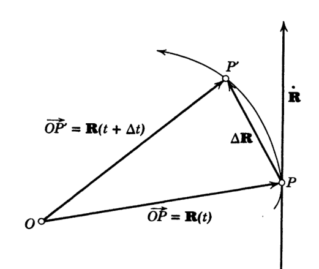
图 4.41 曲线上位置向量的导数 R ˙ \dot{\mathbf R} R ˙ P P ′ PP' P P ′ P P P R ˙ ≠ 0 \dot{\mathbf R}\ne\mathbf0 R ˙ = 0 C C C t t t
cos α = x ˙ x ˙ 2 + y ˙ 2 , sin α = y ˙ x ˙ 2 + y ˙ 2 .
\cos\alpha=\frac{\dot x}{\sqrt{\dot x^2+\dot y^2}},\qquad
\sin\alpha=\frac{\dot y}{\sqrt{\dot x^2+\dot y^2}}.
cos α = x ˙ 2 + y ˙ 2 x ˙ , sin α = x ˙ 2 + y ˙ 2 y ˙ . 其长度 ∣ R ˙ ∣ = x ˙ 2 + y ˙ 2 |\dot{\mathbf R}|=\sqrt{\dot x^2+\dot y^2} ∣ R ˙ ∣ = x ˙ 2 + y ˙ 2 d s / d t ds/dt d s / d t s s s t t t t t t ∣ R ˙ ∣ |\dot{\mathbf R}| ∣ R ˙ ∣ 速率 。力学中的速度 兼有大小（速率）和方向，用向量 R ˙ = ( x ˙ , y ˙ ) \dot{\mathbf R}=(\dot x,\dot y) R ˙ = ( x ˙ , y ˙ ) t t t
加速度
同样，质点的加速度 定义为向量 R ¨ = ( x ¨ , y ¨ ) \ddot{\mathbf R}=(\ddot x,\ddot y) R ¨ = ( x ¨ , y ¨ ) x ¨ = y ¨ = 0 \ddot x=\ddot y=0 x ¨ = y ¨ = 0 t t t R ¨ = 0 \ddot{\mathbf R}=\mathbf0 R ¨ = 0 x ˙ = a , y ˙ = b \dot x=a,\ \dot y=b x ˙ = a , y ˙ = b t t t x = a t + c , y = b t + d x=at+c,\ y=bt+d x = a t + c , y = b t + d
若用位置向量 R = R ( t ) = ( x ( t ) , y ( t ) ) \mathbf R=\mathbf R(t)=(x(t),y(t)) R = R ( t ) = ( x ( t ) , y ( t )) α ≤ t ≤ β \alpha\le t\le\beta α ≤ t ≤ β ∫ α β ∣ R ˙ ∣ d t \int_\alpha^\beta|\dot{\mathbf R}|\,dt ∫ α β ∣ R ˙ ∣ d t A = 1 2 ∫ α β R × R ˙ d t A=\frac12\int_\alpha^\beta\mathbf R\times\dot{\mathbf R}\,dt A = 2 1 ∫ α β R × R ˙ d t
κ = R ˙ × R ¨ ∣ R ˙ ∣ 3 .
\kappa=\frac{\dot{\mathbf R}\times\ddot{\mathbf R}}{|\dot{\mathbf R}|^3}.
κ = ∣ R ˙ ∣ 3 R ˙ × R ¨ . 加速度的切向分量与法向分量
再把 t t t γ \gamma γ R ˙ \dot{\mathbf R} R ˙ R ¨ \ddot{\mathbf R} R ¨ ∣ R ¨ ∣ cos γ |\ddot{\mathbf R}|\cos\gamma ∣ R ¨ ∣ cos γ 切向加速度 。∣ R ¨ ∣ sin γ |\ddot{\mathbf R}|\sin\gamma ∣ R ¨ ∣ sin γ R ˙ \dot{\mathbf R} R ˙ 90 ∘ 90^\circ 9 0 ∘ 法向加速度 （图 4.42）。由内积、外积的定义，
∣ R ¨ ∣ cos γ = R ˙ ⋅ R ¨ ∣ R ˙ ∣ , ∣ R ¨ ∣ sin γ = R ˙ × R ¨ ∣ R ˙ ∣ .
|\ddot{\mathbf R}|\cos\gamma=\frac{\dot{\mathbf R}\cdot\ddot{\mathbf R}}{|\dot{\mathbf R}|},
\qquad |\ddot{\mathbf R}|\sin\gamma=\frac{\dot{\mathbf R}\times\ddot{\mathbf R}}{|\dot{\mathbf R}|}.
∣ R ¨ ∣ cos γ = ∣ R ˙ ∣ R ˙ ⋅ R ¨ , ∣ R ¨ ∣ sin γ = ∣ R ˙ ∣ R ˙ × R ¨ . 设 v = d s / d t = ∣ R ˙ ∣ = R ˙ ⋅ R ˙ v=ds/dt=|\dot{\mathbf R}|=\sqrt{\dot{\mathbf R}\cdot\dot{\mathbf R}} v = d s / d t = ∣ R ˙ ∣ = R ˙ ⋅ R ˙
R ˙ ⋅ R ¨ = 1 2 ( R ˙ ⋅ R ¨ + R ¨ ⋅ R ˙ ) = 1 2 d d t ( R ˙ ⋅ R ˙ ) = 1 2 d v 2 d t = v d v d t ,
\dot{\mathbf R}\cdot\ddot{\mathbf R}
=\tfrac12(\dot{\mathbf R}\cdot\ddot{\mathbf R}+\ddot{\mathbf R}\cdot\dot{\mathbf R})
=\tfrac12\frac{d}{dt}(\dot{\mathbf R}\cdot\dot{\mathbf R})=\tfrac12\frac{dv^2}{dt}=v\frac{dv}{dt},
R ˙ ⋅ R ¨ = 2 1 ( R ˙ ⋅ R ¨ + R ¨ ⋅ R ˙ ) = 2 1 d t d ( R ˙ ⋅ R ˙ ) = 2 1 d t d v 2 = v d t d v , 有
∣ R ¨ ∣ cos γ = d v d t = v ˙ . (41)
|\ddot{\mathbf R}|\cos\gamma=\frac{dv}{dt}=\dot v.\tag{41}
∣ R ¨ ∣ cos γ = d t d v = v ˙ . ( 41 ) 因此切向加速度恰好等于速率对时间的变化率。利用曲率公式，法向加速度则为
∣ R ¨ ∣ sin γ = κ ∣ R ˙ ∣ 2 = κ v 2 , (42)
|\ddot{\mathbf R}|\sin\gamma=\kappa|\dot{\mathbf R}|^2=\kappa v^2,\tag{42}
∣ R ¨ ∣ sin γ = κ ∣ R ˙ ∣ 2 = κ v 2 , ( 42 ) 即速率的平方与曲率的乘积。
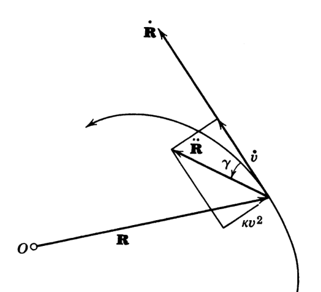
图 4.42 切向加速度与法向加速度 若质点沿曲线以恒定速率 v v v v ˙ \dot v v ˙ κ > 0 \kappa>0 κ > 0 sin γ > 0 \sin\gamma>0 sin γ > 0 P P P
译者注 速率只记录瞬时走得多快。即使它保持不变，速度的方向也可以不断改变，改变方向所需的加速度就是式 (42) 的法向分量。